Designer. Builder. True Outlier.
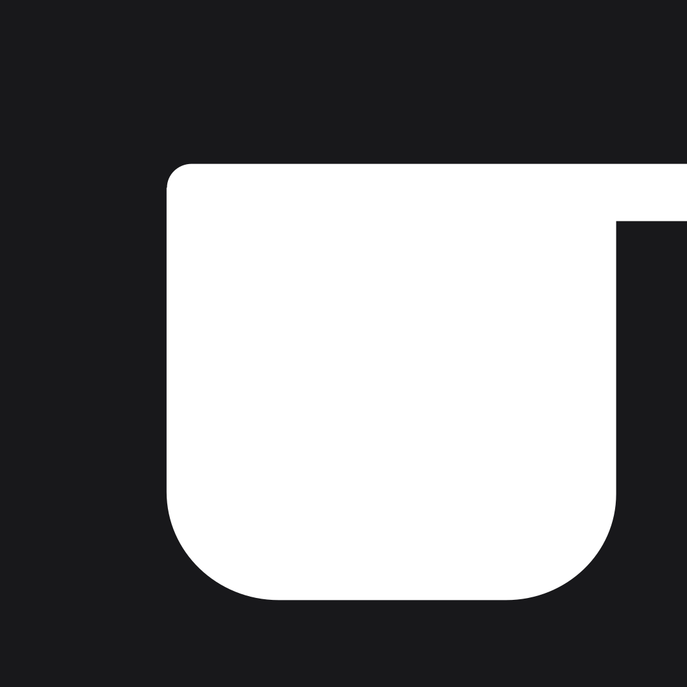
Complex ideas turned into clear brands, systems, and websites — built to ship.
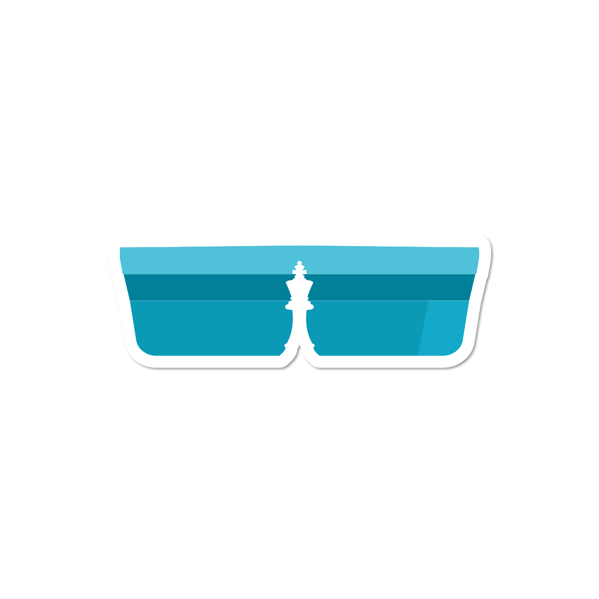
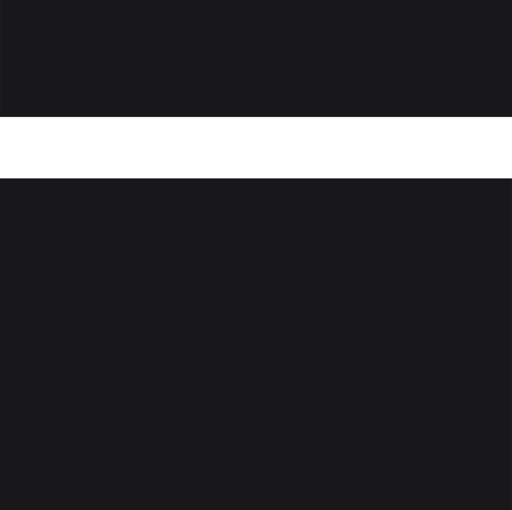
Prototypes, experiments, and unconventional routes — the thing nobody scoped.
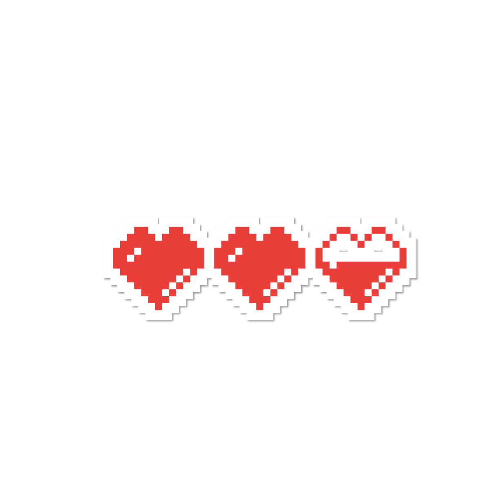
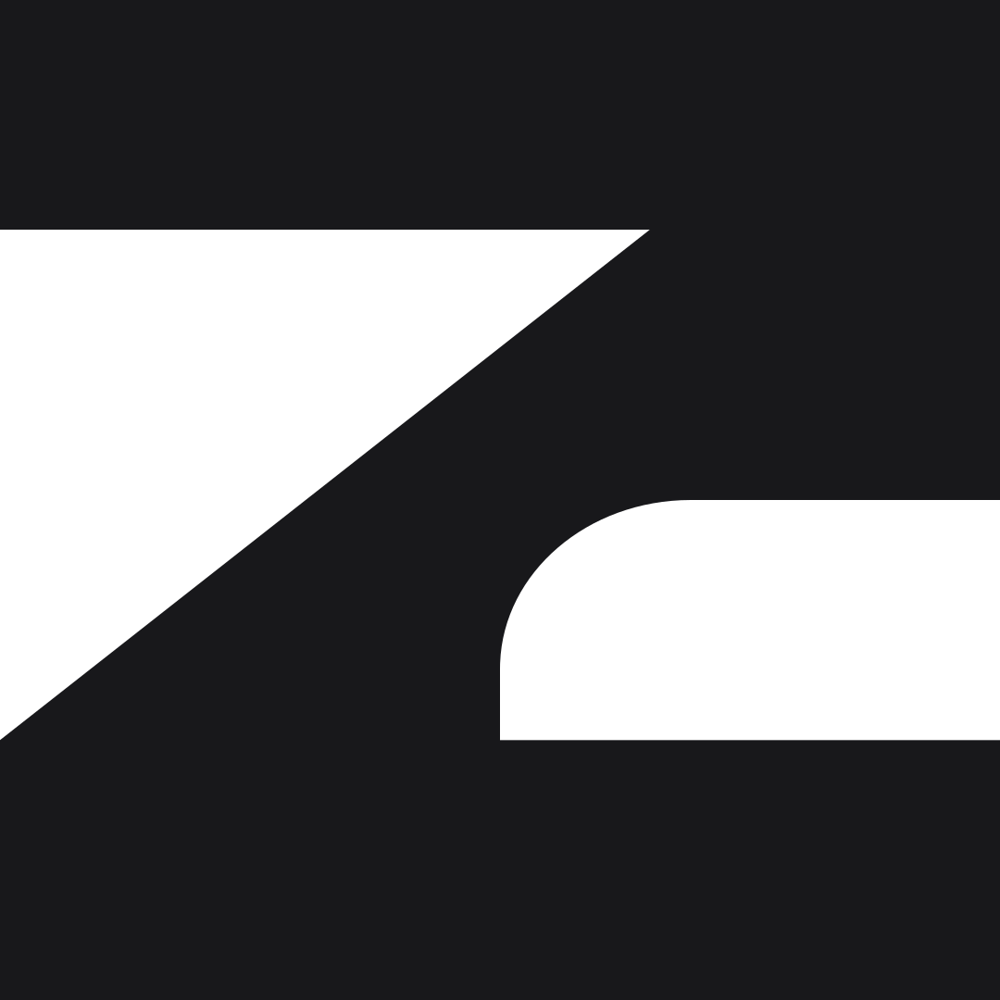
Strategy and creative direction — questioning the premise before answering it.
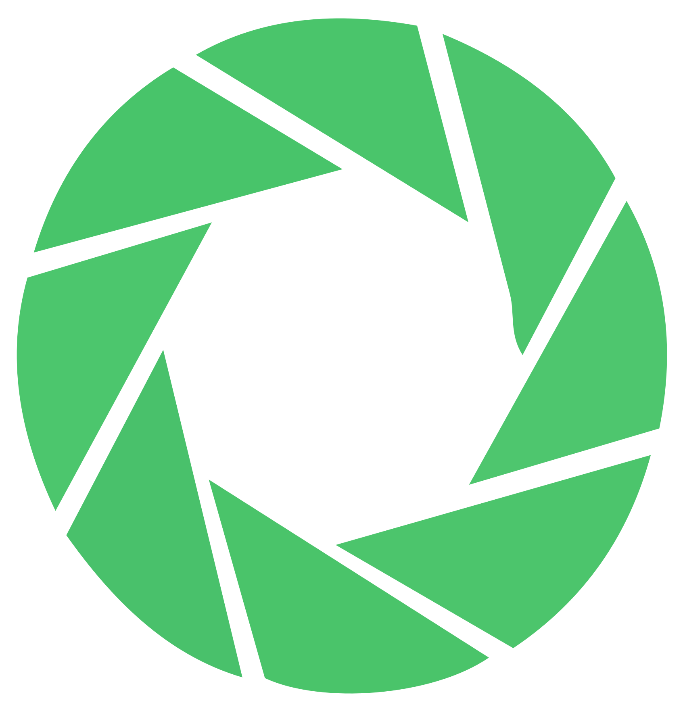
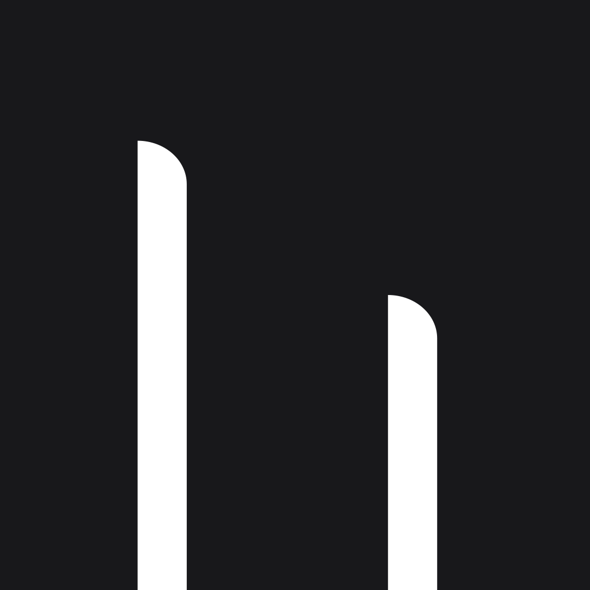
Unconventional concepts — the outlier route to what matters.
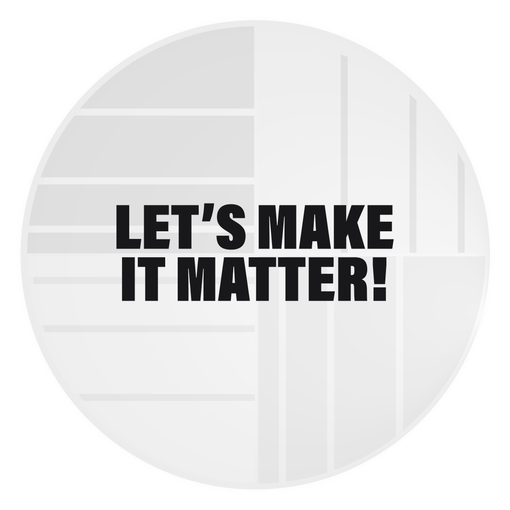
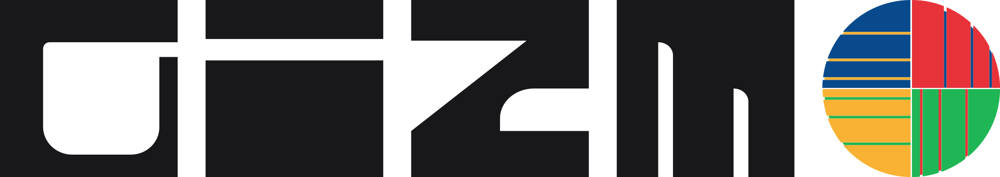
The True Outlier. Question the premise, reveal the pattern, make it matter.